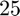
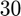
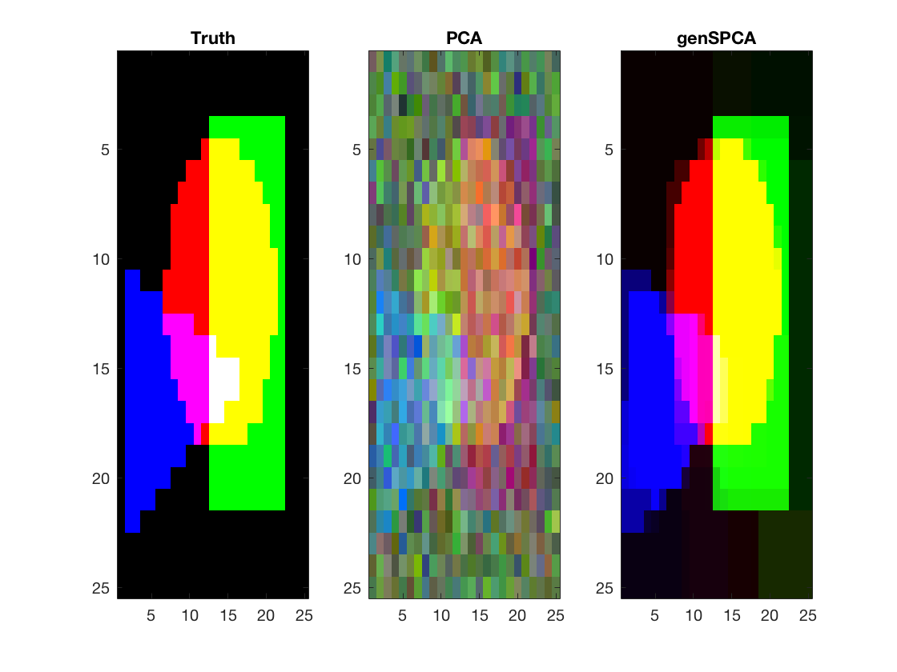

Simulation- and deconvolution of Hyperspectral Image
In this toy example a  by image with  channels are generated from three components, stuctured as well as random noise. The Image is decomposed by PCA and generalized sparse matrix factorization.
Contents
Image settings
rng(123) nx = 25; ny = 25; x = linspace(1,100,nx); y = linspace(1,100,ny); X = repmat(x',length(y),1); Y = repmat(y,length(x),1); Y = Y(:);
A circle
cnt = [45 55]; r = 30; T = zeros(length(X),1); T(((X - cnt(1)).^2 + (Y-cnt(2)).^2)<r^2 ) =1; T1 = T;
A square
corners = [10 50; 85 90]; T = zeros(length(X),1); T(X>corners(1,1) & X<corners(2,1) & Y>corners(1,2) & Y<corners(2,2)) = 1; T2 = T;
A triangle
corners = [ 40 5; 60 70; 90 5]; id = 1:2; b = (corners(id(2),2)-corners(id(1),2))/(corners(id(2),1)-corners(id(1),1)); a = corners(id(1),2) - b*corners(id(1),1); E1 = Y<a + b*X; id = [1 3]; b = (corners(id(2),2)-corners(id(1),2))/(corners(id(2),1)-corners(id(1),1)); a = corners(id(1),2) - b*corners(id(1),1); E2 = Y>a + b*X; id = 2:3; b = (corners(id(2),2)-corners(id(1),2))/(corners(id(2),1)-corners(id(1),1)); a = corners(id(1),2) - b*corners(id(1),1); E3 = Y<a + b*X; T = zeros(length(X),1); T(E1 & E2 & E3) = 1; T3 = T;
Combine the three components
TT = [T1 T2 T3]; Tm = reshape(TT,length(x),length(y),3); D = mk2dgradient(ny,nx);
Some spectral profiles
p = 30; P = randn(3,p);
White noise
E = randn(size(TT,1),p);
Structured noise
Tn = randn(size(TT));
Data
DataSignal = TT*P; DataStructNoise = 0.3*Tn*P; DataWhiteNoise = E*0.6; Data = DataSignal + DataStructNoise + DataWhiteNoise;
Variance distribution
varComp = [trace(DataSignal'*DataSignal) trace(DataStructNoise'*DataStructNoise) trace(DataWhiteNoise'*DataWhiteNoise)] varCompprc = varComp/sum(varComp) round(varCompprc*100)
varComp =
1.0e+03 *
9.7225 3.3614 6.7728
varCompprc =
0.4896 0.1693 0.3411
ans =
49 17 34
Recover by PCA
[u s v] = svds(Data,3); r= permutereflect(P',v,1); u = u*r.Q'; u = u*diag(sign(mean(u))); Um = reshape(u,length(x),length(y),3); for i=1:3 xx = squeeze(Um(:,:,i)); xx = xx - min(xx(:)); xx = xx/max(xx(:)); Um(:,:,i) =xx; end
Recover by genSPCA
res = genSPCA(Data',D,3,1.5,'svd','dual'); r = permutereflect(P',res.loads{1},1); Vm = res.loads{2}*r.Q'; Vm = Vm*diag(sign(mean(Vm))); Vm = reshape(Vm,length(x),length(y),3); for i=1:3 xx = squeeze(Vm(:,:,i)); xx = xx - min(xx(:)); xx = xx/max(xx(:)); Vm(:,:,i) =xx; end
Plot the results
subplot(1,3,1); image(Tm); title('Truth') subplot(1,3,2); image(Um); title('PCA') subplot(1,3,3); image(Vm); title('genSPCA')